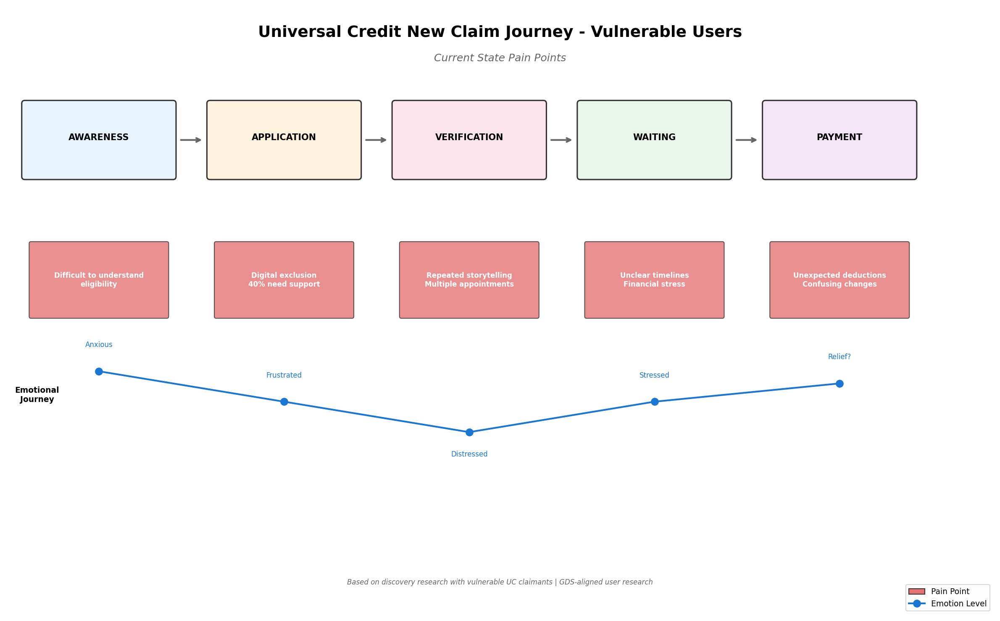
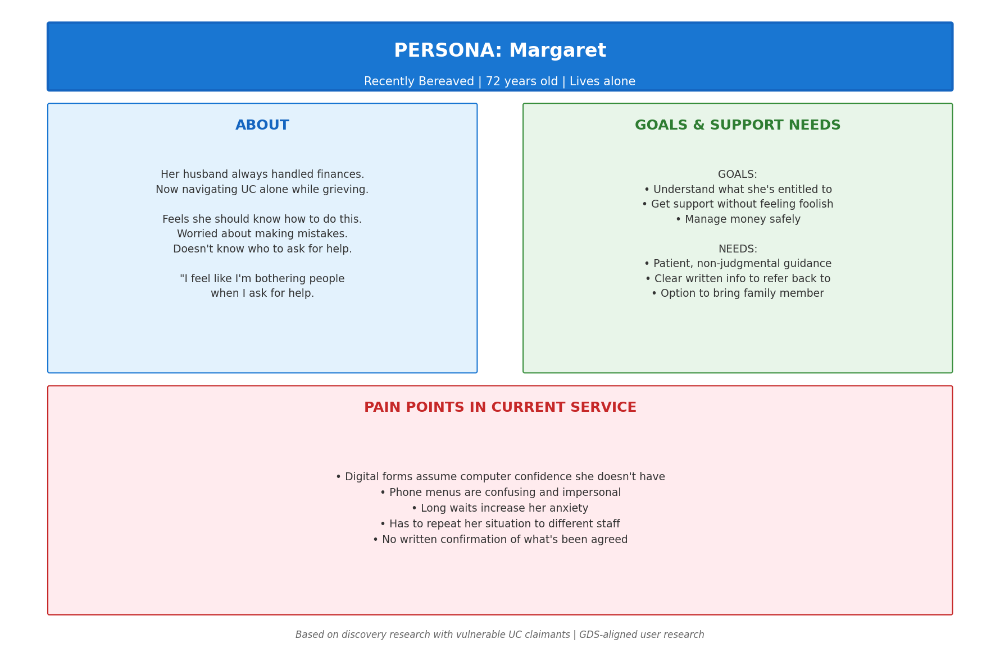

Project Overview
Context: This discovery research project explores the needs of vulnerable customers making a new Universal Credit claim. It is informed by DWP's Advanced Customer Support (ACS) programme and the challenges identified in their 2024-2025 service transformation work.
Approach: GDS-aligned discovery research using qualitative methods to understand user needs, contexts, and pain points.
Timeline: 6-week discovery phase (simulated)
Background Research
DWP's Advanced Customer Support (ACS) Programme
Before conducting primary research, I reviewed publicly available information about DWP's services:
- ACS supports customers with additional needs across all DWP services
- The Visiting Service helps those who cannot access services digitally
- AI is being used to identify vulnerable customers from correspondence
- Key insight: 40% of Universal Credit claims require some form of additional support
Key Challenges Identified
- Digital exclusion affects many vulnerable customers
- Customers often have to repeat their story multiple times
- Support needs are identified late in the process
- Limited flexibility in how customers can engage with services
Research Objectives
- Understand the end-to-end experience of vulnerable users making a UC claim
- Identify pain points and barriers in the current journey
- Explore users' mental models, expectations, and emotional states
- Understand the context in which users interact with UC services
- Identify opportunities for service improvement
Research Methodology
| Method | Purpose | Participants |
|---|---|---|
| Semi-structured interviews | Deep understanding of individual experiences | 8 participants |
| Contextual inquiry | Observe real-world behaviour and environment | 3 participants |
| Diary study | Capture experiences over time | 5 participants, 2 weeks |
| Stakeholder interviews | Understand organisational constraints | 4 DWP work coaches (simulated) |
Participant Recruitment
Target user groups (based on DWP's vulnerable customer profiles):
- Users with mental health conditions (anxiety, depression)
- Users with physical disabilities or mobility issues
- Elderly users (65+) new to digital services
- Users with limited English proficiency
- Users experiencing homelessness or housing insecurity
- Users with learning disabilities
Total participants: 16 users + 4 stakeholders
Service Journey Map

Current state journey showing pain points and emotional experience across five phases
Key Pain Points Identified
| Phase | Pain Point | Impact |
|---|---|---|
| Awareness | Difficult to understand eligibility | Users uncertain if they qualify |
| Application | Digital exclusion (40% need support) | Many cannot complete online |
| Verification | Repeated storytelling | Customer distress, inefficiency |
| Waiting | Unclear timelines | Financial stress, anxiety |
| Payment | Unexpected deductions | Confusion, hardship |
User Persona: Margaret

Persona representing recently bereaved elderly users navigating UC for the first time
Key Insights from Persona Development
- Context matters: Margaret is grieving while learning to manage finances
- Confidence barrier: She feels she "should" know how to do this
- Support needs: Patient guidance, written information, option to bring someone
- Emotional state: Anxious about making mistakes, doesn't want to be a burden
Key Research Findings
Finding 1: Digital Exclusion is Not Just About Access
"I've got a phone, yeah. But I don't trust myself to do important stuff on it. What if I press the wrong thing?"
— Participant 3, 58, anxiety
Implication: Simply providing digital channels isn't enough. Users need confidence-building and clear error recovery.
Finding 2: The Emotional Burden of Repeated Storytelling
"I had to tell five different people that I'd just come out of hospital. Each time it felt like reliving it."
— Participant 7, 42, recent hospital discharge
Implication: A single view of customer needs and circumstances is essential for vulnerable users.
Finding 3: Flexibility is About Control, Not Just Convenience
"Nobody told me I could have someone with me. I went on my own and panicked."
— Participant 5, 34, autism
Implication: Services should proactively offer options, not wait for users to ask.
Finding 4: Early Identification of Support Needs Changes Everything
Users whose vulnerability was identified early had significantly better experiences.
Implication: Proactive identification of support needs should happen at first contact, not after problems emerge.
Recommendations
Priority 1: Early Vulnerability Identification (Must Have)
Implement AI-assisted screening at first contact to identify users who may need additional support.
Priority 2: Single View of Support Needs (Must Have)
Create a central record of user support needs that is accessible across all DWP services.
Priority 3: Flexible Engagement Options (Should Have)
Offer genuine choice in how users engage with UC services—phone, video, face-to-face at multiple locations.
Priority 4: Trauma-Informed Communication (Should Have)
Train all customer-facing staff in trauma-informed communication.
Reflection
What I Learned
- The complexity of vulnerability — It's not a single category but intersecting circumstances
- The emotional dimension of services — Users aren't just "completing tasks"; they're navigating life challenges
- The importance of flexibility — One size never fits all in government services
- GDS principles in practice — Starting with user needs sounds simple but requires genuine commitment
Skills Demonstrated
- Research planning — Designing a multi-method study with clear objectives
- Qualitative methods — Interviews, contextual inquiry, diary studies
- Analysis & synthesis — Thematic analysis, journey mapping, persona development
- Stakeholder engagement — Involving work coaches and service designers
- Communication — Clear, actionable findings and recommendations
- Ethical practice — Informed consent, trauma-informed approach
- GDS alignment — Following government user research standards